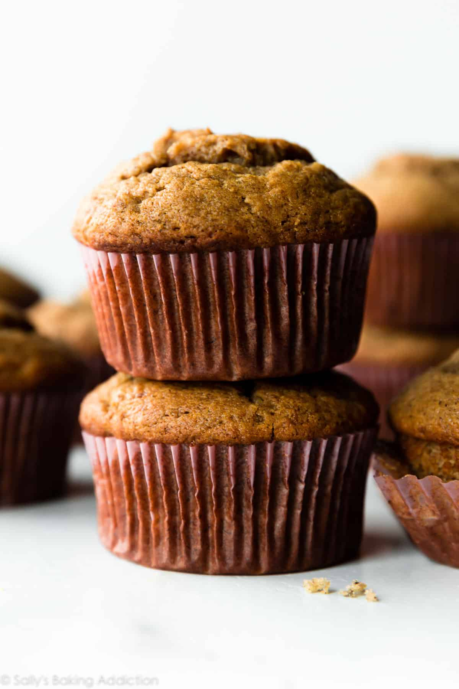

Banana Muffins
The only way I eat bananas is in some kind of baked good so this is one of my all time favorites.
The muffins are good for any seasons but I always find myself gravitating towards it during the Fall and Winter months.
Recipe Credit: https://sallysbakingaddiction.com/banana-muffins/
Ingredients
- 1 and 1/2 cups (188g) all-purpose flour
- 1 teaspoon baking powder
- 1 teaspoon baking soda
- 1/2 teaspoon salt
- 1 teaspoon ground cinnamon
- 1/4 teaspoon ground nutmeg
- 3 large ripe bananas (about 1 and 1/2 cups mashed)*
- 6 Tablespoons (85g) unsalted butter, melted (or melted coconut oil)
- 2/3 cup (135g) packed light or dark brown sugar (or coconut sugar)*
- 1 large egg, at room temperature
- 1 teaspoon pure vanilla extract
- 2 Tablespoons (30ml) milk*
- optional: 1 cup chopped walnuts, pecans, or chocolate chips
Instructions
- Preheat oven to 425°F (218°C). Spray a 12-count muffin pan with nonstick spray or use cupcake liners.
- Whisk the flour, baking powder, baking soda, salt, cinnamon, and nutmeg together in a medium bowl. Set aside.
- In a large bowl or in the bowl of your stand mixer, mash the bananas. On medium speed, beat or whisk in the melted butter, brown sugar, egg, vanilla extract, and milk.
- Pour the dry ingredients into the wet ingredients, then beat or whisk until combined. If adding nuts or chocolate chips, fold them in now. Batter will be thick.
- Spoon the batter into liners, filling them all the way to the top.
- Bake for 5 minutes at 425 then, keeping the muffins in the oven, reduce the oven temperature to 350°F (177°C).
- Bake for an additional 16-18 minutes or until a toothpick inserted in the center comes out clean.
The total time these muffins take in the oven is about 21-23 minutes, give or take. (For mini muffins, bake 12-14 total minutes at 350°F (177°C).)
Allow the muffins to cool for 5 minutes in the muffin pan, then transfer to a wire rack to continue cooling.
Muffins stay fresh covered at room temperature for a few days or in the refrigerator for up to 1 week.